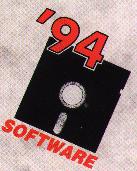

![[Oslonett Home]](/graphics/home.gif)

Software '94 arrangeres i dagene 1. - 4. februar på INFO-RAMA Senteret i Sandvika. Tradisjonen tro vil arrangementet også i år bestå av utstilling, kurs og konferanser med høy faglig kvalitet. "Bedre utnyttelse av eksisterende maskin- og programvare for å oppnå mer kost/effektive løsninger", er valgt som en rød tråd for arrangementet.
Årets leverandøruavhengige konferanseprogram retter seg inn mot ulike målgrupper som ledelse, IT-profesjonelle og avanserte brukere. Konferanseprogrammet inneholder også temaer som spesielt er beregnet for økonomiansvarlige, innkjøpere, planleggere og brukere i offentlig forvaltning og privat virksomhet. Spesielt av året er en presentasjon av suksessfortellinger fra privat og offentlig sektor.
Erfaringer med utviklingsverktøy i større IT-prosjekter, tirsdag 1/2
Systemutviklere har i stadig større grad tatt i bruk avanserte verktøy for utvikling av større, virksomhetskritiske informasjonssystemer. Denne konferansen belyser egenskaper ved noen verktøy som er benyttet ved slik utvikling, og formidler brukererfaringer fra miljøer som har utviklet, satt i drift og forvaltet verktøybaserte systemer.
Geografiske Informasjonssystemer (GIS). GIS som integrert del i fremtidens Informasjonssystemer, tirsdag 1/2
GIS har hatt en rivende utvikling i de senere årene. Trenden er at GIS i større grad blir integrert med administrative systemløsninger. GIS har fått en stadig større utbredelse i "ikke-tekniske"-miljøer. Konferansen retter søkelyset mot problemer, utfordringer, gevinster og nytteverdier i gjennomføring og bruk av denne teknologien.
Støtteverktøy i service-funksjonen, tirsdag 1/2
Flere virksomheter har gjennom de senere år vurdert og tatt i bruk støtteverktøy for registrering og oppfølgning av feil og problemer i tilknytning til bruk av maskin- og programvare. DND har gjennomført to spørreundersøkelser rettet mot brukere, potensielle brukere og leverandører av denne type verktøy. Resultatet av disse spørreundersøkelsene vil bli presentert og danne grunnlag for paneldebatt. Tre utvalgte leverandører og en virksomhet som har valgt å utvikle eget verktøy vil presentere sine produkter.
Service - den nye konkurransefaktoren? onsdag 2/2
Hvordan sikre best mulig organisering av servicetjenestene i tilknytning til maskin- og programvare? Konferansen gir kunnskap om hvordan ulike virksomheter har organisert seg, og hvilke utfordringer de har møtt gjennom etablering og drift. Utfordringer og visjoner for fremtidens servicekonsept vil bli belyst.
Objektorientert systemutvikling, onsdag 2/2
Gjennom dette kurset vil du få oversikt over eksisterende objektorienterte teknikker, med spesiell vekt på programutvikling av Windows-baserte applikasjoner og klient/tjener-løsninger. Målet er at deltagerne selv skal kunne delta i en objektorientert systemutvikling.
Øvelse i objektorientert modellering, torsdag 3/2
Kursets mål er å gi deltagerne en opplevelse av hva en objektorientert modell er. Det legges stor vekt på at deltagerne skal få mulighet til å delta aktivt. Kursdeltakerne skal på den måten opparbeide en bedre forståelse for hva objektet er, og hvordan objekter brukes for å modellere systemer.
Bedre IT utnyttelse gjennom økt brukskvalitet, onsdag 2/2
IT-systemers brukskvalitet uttrykker egenskaper ved systemene som har betydning for deres bruk og omfatter læringsegenskaper, bruksegenskaper, nytteverdi og fleksibilitet. Konferansen vil fokusere på måter å oppnå høyere brukskvalitet gjennom ulike innfallsvinkler. Praktiske eksempler vil bli brukt.
Gruppevare, fredag 4/2
Med elektronisk gruppevare menes informasjonssystemer som støtter samvirke mellom mennesker for å utføre de oppdrag og de mål som organisasjonen har pålagt dem. Denne konferansen vil belyse muligheter, erfaringer og konsekvenser ved dette relativt nye området. Et utvalgt antall leverandører gir korte og produktorienterte presentasjoner.
Trender innenfor datakommunikasjon - et kurs for deg som ønsker å holde deg oppdatert, torsdag 3/2
Et klart utviklingstrekk innenfor IT-bransjen er at sentraliserte systemer avløses av klient-tjener arkitekturer. Slike arkitekturer gir bedre mulighet for å utføre oppgavene der de best kan utføres. Nye overføringstjenester vil gi nye muligheter for å lage nye typer applikasjoner. Samtidig utvikles operativsystemene til å legge mer vekt på distribuerte aspekter.
Integrasjon av programvare, torsdag 3/2
Kurset omhandler integrasjon av informasjon under Windows på tvers av programvare og brukere. Kurset viser hvilke muligheter som finnes, standardformater og muligheter som tilbys gjennom avanserte verktøy. Eksempler på aktuelle verktøy blir presentert.
Kvalitetskontroll av standardpakker og eksisterende programvare, onsdag 2/2
Kurset omhandler hvilke fornuftige krav vi kan stille til funksjonalitet, pålitelighet, programmenes struktur, og hvordan vi kan sjekke at kravene er oppfylt. Teknikkene kan både anvendes til egen eksisterende programvare, og til standardpakker fra ulike leverandører.
Kvalitetsforbedring - hvordan lære av erfaring? torsdag 3/2
Kvalitetsarbeid tar vare på dine ressurser. Du slipper å gjøre feil, dermed koster det mindre. Kvalitet skapes ikke av et kvalitetsbyråkrati. Kvalitet skapes ved å lære av sine egne og andres feil. De fleste bedrifter kan øke styringen av sitt arbeid ved å ta i bruk noen helt grunnleggende teknikker. Kurset viser hva som finnes og hvordan de benyttes.
Automatisert programvaretest - kostnadsbesparelse eller mareritt? fredag 4/2
Konferansen fokuserer på erfaringer fra bedrifter som har tatt i bruk standardpakker eller egenutviklede verktøy for programvaretest. Seminaret vil belyse problemer og hvordan disse er blitt overvunnet. Et utvalg av leverandører viser frem produktene. Både PC, UNIX miljøer, VAX og stormaskin vil være representert.
Nye databasehåndteringssystemer - en fordel for brukere eller leverandører? fredag 4/2
Sentrale aktører i databasemarkedet vil belyse hvordan man får forskjellige aktive databaser til å spille sammen i et integrert informasjonssystem, hvor databasene selv tar aktiv del i de daglige beslutningsprosesser. Konferansen vil også presentere status og fremtidige planer for de mest aktuelle standarder som er sentrale for de enkelte databaseleverandører.
Sikkerhet og kvalitet i IT-systemer, onsdag 2/2
Konferansen setter fokus på sentrale områder innen dagens arbeid med informasjonssikkerhet. Områder som blir belyst er erfaringer fra arbeid med å innlemme sikkerhet som en integrert del av bedriftens kvalitetssystem, beskyttelse av bærbare PC-er som skal kommunisere med dataanlegget på kontoret, og hvilke krav vi bør sette til slike systemer. Hvordan kan vi beskytte informasjon av ulik gradering som lagres i samme dataanlegg?
Virksomhetsregnskap i praksis, tirsdag 1/2
Offentlig sektor har de siste årene arbeidet med implementering av virksomhetsstyring. Dette er en omfattende omstillingsprosess som fortsatt pågår. Virksomhetsregnskap inngår som del av denne prosessen og utfordringene er store. Omstillingen fra pengeregnskap til virksomhetsregnskap står sentralt og er nødvendig for å tilfredsstille nye krav. Denne omstillingen har vist seg krevende å gjennomføre i praksis. Tema for dagen er derfor "virksomhetsregnskap i praksis" med vekt på eksempler og erfaringer.
IT-støttet økonomistyring mot år 2000, - et spørsmål om økonomifunksjonens rolle og teknologiens muligheter, onsdag 2/2
Økonomistyring er ikke lenger er en sentral funksjon, men snarere et konglomerat av både sterkt desentraliserte og sterkt sentraliserte aktiviteter. Denne utviklingen er en følge både av nye styringsfilosofier (målstyring, activity based costing etc.) og ikke minst fremveksten av moderne programvare. Det er ikke lenger et spørsmål om å velge ett regnskapssystem, men snarere å velge et "sett med instrumenter," som samlet understøtter økonomistyringen såvel sentralt som lokalt.
Kurset tar sikte på å synliggjøre hvordan brukeren planlegger, velger og implementerer en helhetlig IT-løsning innen økonomifunksjonen. Kurset vil ha en praktisk og metodisk vinkling.
IT-innkjøp og standarder, torsdag 3/2
Bestemmelsene i EFs innkjøpsdirektiv for varer og tjenester samt beslutningen om å kreve standarder ved anskaffelse av kommunikasjonsløsninger gjelder for hele EØS-området. Hva betyr dette for den enkelte innkjøper, leverandør og konsulent som er med på offentlige IT-anskaffelser i Norge? Internasjonaliseringen gir helt nye spilleregler og nye muligheter for både offentlig forvaltning og IT-bransjen. Konferansen vil gi en enkel, konkret og praktisk innrettet innføring i de viktigste problemstillingene og utfordringene vi vil møte.
Offentlige servicekontorer -
fremtidens publikumsvennlige brukerorienterte forvaltning, fredag 4/2
Gjennom det strategiske programmet "Offentlige servicekontorer" arbeides det med nye former for publikumsbetjening: samlokalisering, selvbetjening og førstelinjetjenester for flere offentlige virksomheter. Utgangspunktet er ett kontaktpunkt mot det offentlige.
Alle offentlige virksomheter har tatt i bruk IT-
løsninger i sin oppgaveløsning og ved publikumsbetjening. Offentlige servicekontorer reiser en rekke nye utfordringer til både IT-
løsningene, kommunikasjon og den organisatoriske utformingen. Konferansen vil belyse noen sentrale problemstillinger.
Suksessfortellinger
.... med edb som gulrot.. Omstilling av Skatteetaten, tirsdag 1. februar kl. 1630 - 1730
Skatteetaten er i full gang med en storstilt satsing på edb og omstilling ved alle landets 439 likningskontorer og folkeregistre. Dette skal gi en mer effektiv og bedre styrt etat, og bedre service for skattyterne.
FLID-prosjektet er opprettet for å planlegge og gjennomføre denne omstillingsprosessen. Foredraget vil presentere erfaringer, planlegging, gjennomføring og gevinsthøsting. Hvilke faktorer har vært avgjørende for at resultatet så langt er lovende? Hva gjenstår før omstillingen er fullført, og dermed før suksessen er sikret?
Fra servicebyråkunde til avansert IT-bruker. Historien om et utviklingsprogram,
onsdag 2. februar kl. 1630 - 1730
Nycomed har i løpet av 5 år gått fra tradisjonell databehandling til strategisk bruk av IT innen logistikk, økonomi og personal til laboratoriesystemer, avanserte kjemiske applikasjoner og elektronisk post.
Nøkkelen til denne suksessen ligger i et utviklingsprogram med en svært sterk brukermedvirkning. Dette gir gevinster, men også kostnader. Organisasjon, kompetanse og teknologi må utvikles i takt. Hva har vi lært? Hva burde vi gjort annerledes? Er det noen av våre erfaringer som kan overføres til andre miljøer?
Bill.mrk.: Har du bruk for en ledig MVS-maskin? Torsdag 3. februar kl. 1630 - 1730
I 1992 besluttet Esso Norge å flytte sin databehandling på stormaskin til England. Etter å ha hatt egen drift av stormaskiner i over 30 år, blir dette behovet nå dekket av Esso UKs datasenter. Foredraget vil fortelle om Esso Norges overføring av maskindriften til England -beslutningsgrunnlaget, forberedelsene, gjennomføringen og erfaringene i tiden som er gått siden flyttingen.
Trondheimsmodellen - good for you - bad for who? fredag 4. februar kl. 1330 - 1430
Trondheim kommune har nylig gjennomført en større organisasjonsendring. Parallelt med dette har en ny IT-strategi og IT-avtale vakt berettiget oppsikt. Krav til edb-løsninger er ikke rettet mot enkeltprodukter, men formulert som definerte funksjoner og tjenester. Det overlates til leverandøren å realisere dette.
Foredraget vil fokusere på erfaringer når det gjelder prinsipper i avtalen, driftskonsept, variantbegrensninger, standardisering, sluttbrukers erfaringer, ledelsens holdninger, kostnadsstyring og kost/nytte-effekter.
Nærmere opplysninger og fullstendig program for Software 94 kan fås ved henvendelse til:
DND, Postboks 6714 Rodeløkka, 0503 Oslo, tlf. 22 37 02 13, fax 22 35 46 69.
Elektronisk adresse: S=firmapost; O=dnd; P=msmail; A=telemax; C=no
evt: firmapost@dnd.msmail.telemax.no
Påmeldingsfrist er 19. januar. Påmeldinger etter denne fristen aksepteres såfremt det er ledige plasser.
![[Bilde av Lisbet Waldenstrøm]](LW.gif)
![[Oslonett Marketplace]](/graphics/market.gif)